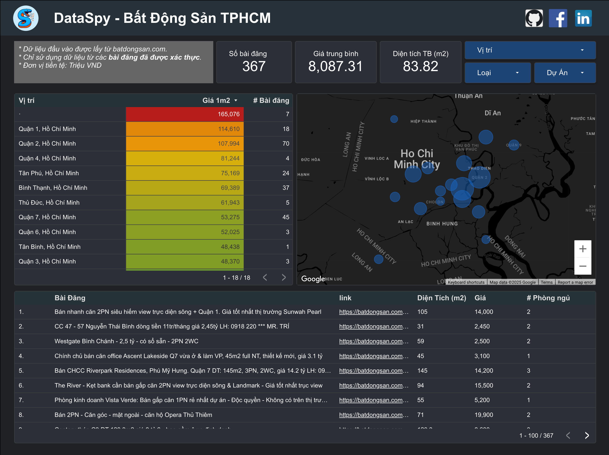

Quy trình xử lý dữ liệu
Từ scraping đến báo cáo, chạy theo lịch trên máy local (crontab).
graph TD
A[Web Scraping: src/_web2br] --> B[(BigQuery re_bronze)]
B --> C[dbt staging: dbt/models/staging]
C --> D[(BigQuery re_silver)]
D --> K[dbt mart: dbt/models/marts]
K --> L[(BigQuery re_gold)]
D --> E[Malloy model: malloy/malloy_publisher/real_estate.malloy]
E --> G[Analysis query: malloy/_materialize/materialize.malloysql]
G --> H[Looker Studio dashboard]
G --> I[Static HTML reports]
J[crontab] -. schedule .-> M[src/orchestrator/run_pipeline.py]
M -. runs .-> A
M -. then .-> C
Báo cáo
Cập nhật: 2026-05-20
Dashboard
Cập nhật: 2026-02-16
Mở Google Looker Studio
Tài liệu & mã nguồn
Tài liệu kỹ thuật đọc trực tiếp trên GitHub.